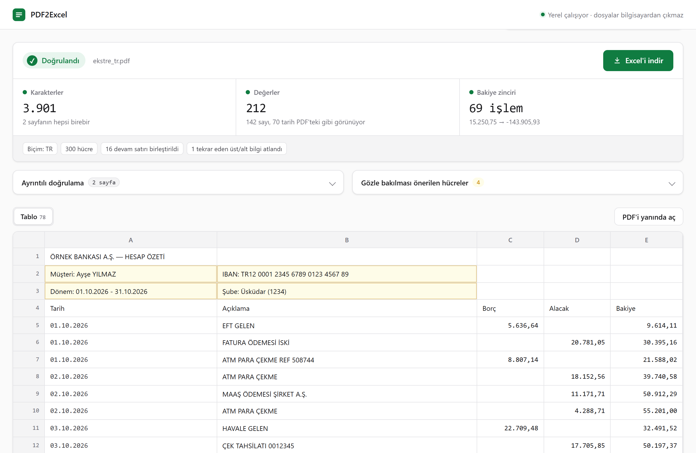

Ekstre, fatura, rapor, fiyat listesi... PDF'teki tabloyu sütunlarıyla Excel'e aktarır; ardından Excel dosyasını açıp her karakteri ve her sayıyı PDF'le karşılaştırır. Bir şey tutmazsa size hangi hücre olduğunu söyler.
Windows 10 / 11 · tek dosya, kurulum yok · yaklaşık 35 MB

Çoğu dönüştürücü "büyük ihtimalle doğru" bir dosya verir. PDF2Excel doğru olduğunu kontrol eder.
Excel dosyası yazıldıktan sonra yeniden açılır; her sayfanın karakterleri ve her sayı PDF'le birebir karşılaştırılır. Ekstrelerde "önceki bakiye + tutar = bakiye" zinciri de kontrol edilir.
Her şey sizin bilgisayarınızda çalışır. Yükleme yok, hesap yok, internet bağlantısı gerekmez. Banka ekstresi gibi gizli belgeler için güvenle kullanabilirsiniz.
Çizgili ya da çizgisiz tablolar, birleşik hücreler, birkaç satıra yayılan açıklamalar, sayfa sonunda bölünen satırlar ve her sayfada tekrar eden başlıklar doğru yere oturur.
1.234,56 ve 1,234.56 biçimleri otomatik tanınır; tutarlar toplanabilir sayı, tarihler tarih olarak gelir. Hesap numarası gibi baştaki sıfırlar ve 16 haneli numaralar bozulmaz.
Uygulama dijital olarak imzalanmadığı için Windows SmartScreen Windows bilgisayarınızı korudu diyebilir. Ek bilgi → Yine de çalıştır ile açabilirsiniz. Kaynak kodu GitHub'da açıktır; isterseniz kendiniz derleyebilirsiniz.
Neyi garanti ettiğini ve etmediğini açıkça söyler.